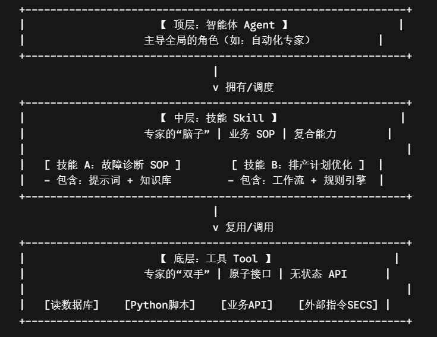
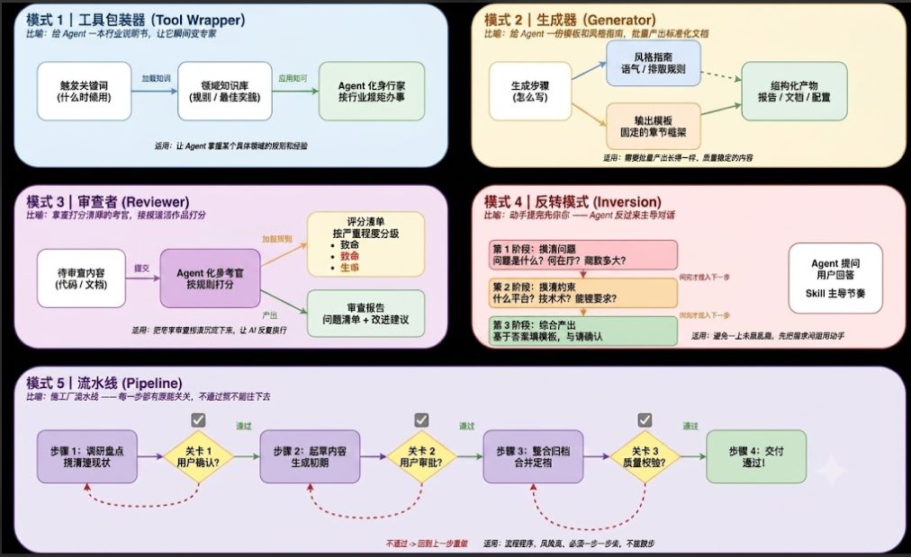
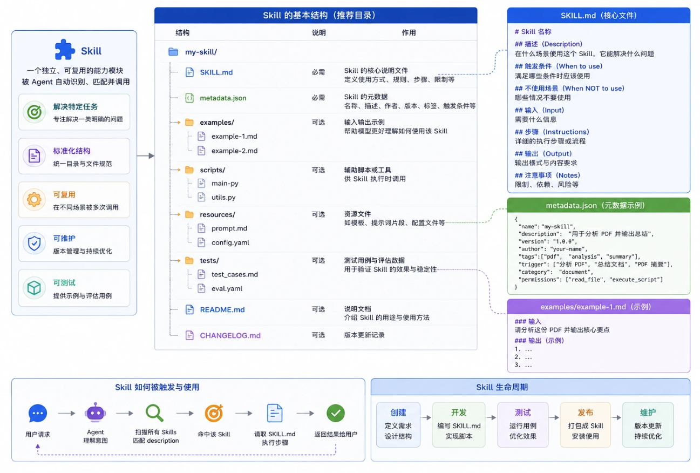

本章导览
概要
本章按「前言 → LLM 基础 → Agent 技术栈 → MES Demo」组织，与第 23 章业务智能化（需求侧）互补；Palantir AIP 详见第 24 章。
阅读顺序
速记
LLM 负责「回答」，Agent 负责「完成任务」；Tool 是原子接口，Skill 是业务复合能力，Memory 让 Agent 跨越单次对话持续进化。
从LLM 认知到Agent 行动——系统梳理 Agent 推理编排、工具协议与企业落地路径。承接第 23 章业务智能化的需求视角；Palantir AIP 平台实践见第 24 章。
本章按「前言 → LLM 基础 → Agent 技术栈 → MES Demo」组织，与第 23 章业务智能化（需求侧）互补；Palantir AIP 详见第 24 章。
LLM 负责「回答」，Agent 负责「完成任务」；Tool 是原子接口，Skill 是业务复合能力，Memory 让 Agent 跨越单次对话持续进化。
来源-《AI智能体赋能行业决策：趋势与实践白皮书（2026）》
在不同场景下，应在 LLM、规则引擎与传统 ML 之间做选型权衡。要点见图示。
企业级 Agent 通常包含接入层、编排层、工具层、记忆层与治理层。要点见图示。
LLM（Large Language Model）是在超大文本语料上训练的「概率生成模型」——基于 Transformer，核心任务是预测「给定前文，下一个 token 最可能是什么」。当模型足够大、数据足够多时，这种「接龙」能力会涌现出语言理解、推理、代码生成等复杂行为。
当前主流大模型多采用 decoder-only 架构：文字被切分为 token 并转为向量，加上位置编码后，通过自注意力让每个词「回头看」上下文并按权重融合信息，再经多层堆叠加深理解，最终预测下一个 token。
Transformer 靠注意力机制理解上下文，靠堆叠层数加深理解，靠预测下一个词完成生成——这是几乎所有大语言模型的核心引擎。
LLM 训练通常分三步：预训练（海量语料「猜下一个词」，学习语言与常识）、SFT 监督微调（用高质量问答范例教会对话）、对齐（用人类偏好排序让回答更安全、有用）。
简单总结：预训练教知识和语言能力，SFT 教对话，对齐教「把话说好」。
推理分两阶段：Prefill（并行读入整段输入，建立 KV 缓存）与 Decode（逐 token 生成，拼回上下文继续预测）。选词基于概率分布，因此同一问题可能得到不同回答。
延伸阅读：LLMs-from-scratch-CN
多模态理解：将图像、音频等非文本信息编码为与文字 token 同体系的向量，送入 Transformer 主干联合处理。
多模态生成：图像/视频多采用扩散模型（从噪声逐步去噪）；也可用 VQ-VAE 将图像离散为「视觉 token」再做自回归生成。音频生成思路类似。
Agent（智能体）是「会思考 + 会行动 + 会反思」、能自主完成多步任务的 AI 执行体。LLM 只会「回答」，Agent 能「完成任务」（多步执行 + 调用工具 + 状态管理）。
五大模块：
| 维度 | 模型 | Agent |
|---|---|---|
| 知识范围 | 知识仅限于其训练数据。 | 通过工具连接外部系统，能够在模型自带的知识之外，实时、动态扩展知识。 |
| 状态与记忆 | 无状态，每次推理都跟上一次没关系，除非在外部给模型加上会话历史或上下文管理能力。 | 有状态，自动管理会话历史，根据编排自主决策进行多轮推理。 |
| 原生工具 | 无。 | 有，自带工具和对工具的支持能力。 |
| 原生逻辑层 | 无。需要借助提示词工程或使用推理框架（CoT、ReAct 等）来形成复杂提示，指导模型进行预测。 | 有，原生认知架构，内置 CoT、ReAct 等推理框架或 LangChain 等编排框架。 |
典型闭环：感知输入 → 推理规划 → 工具执行 → 观察反馈 → 迭代直至任务完成。要点见图示。
Agent 推理编排没有唯一最优解，常见四种模式各有适用场景：ReAct（边想边做）、Plan-and-Execute（先规划后执行）、CoT（显式思维链）、ToT（多分支探索）。实践中可组合使用，例如 Plan 定框架、ReAct 执行子步骤。
ReAct（Reasoning + Action）是推理与行动交替的经典循环：模型边思考、边调用工具、边根据 Observation 继续推理，直到得出最终答案。
Plan-and-Execute：Planner 先产出完整任务计划，Controller 再按序执行；仅在子步骤失败或环境变化时局部重规划。适合报表生成、巡检、批量数据处理等步骤可枚举的场景。
Chain-of-Thought (CoT) 让 LLM 逐步写出中间推理过程。对多步推理任务，在 Prompt 中加入「let's think step by step」或提供推理示例，可显著提升准确率。
三种实现：
Tree of Thoughts (ToT)：多分支探索 + 评估剪枝 + 最优路径搜索，擅长非结构化、强约束、需全局规划的任务；成本高、收敛慢，仅适合真正需要「试错」的场景。
Tool 给 LLM「大脑」接上可执行的外部世界接口，扩展能力边界。Agent 使用工具通常遵循 ReAct 范式：Thought → Action → Tool → Observation 循环。
为什么需要 Tool？大模型存在四类典型短板：
Tool 类型：Function Calling、API 封装、系统能力封装、MCP 调用。每个工具需精准的 Name、Description 与 Parameters Schema；设计原则为清晰语义、可组合、低歧义参数。
MCP（模型上下文协议）像是 AI 应用的「USB-C 接口」——用标准化方式连接模型与数据源、工具，避免每个工具各写一套 adapter、Prompt 与 function calling 格式混乱、难以复用的问题。
架构组成：
通信基于 JSON-RPC 2.0。三类基本元素：Tools（可执行函数）、Resources（上下文数据）、Prompts（可复用模板）；各有 list/get 发现与检索方法，Tools 另有 tools/call 执行。
初始化（initialize）：客户端建立连接并协商能力——protocolVersion 对齐协议版本，capabilities 声明支持的工具/资源/提示及通知能力，clientInfo / serverInfo 交换标识与版本。
工具发现（tools/list）：连接建立后枚举可用工具，返回 name（唯一标识）、title（展示名）、description（功能说明）等元数据。
工具执行（tools/call）：结构化调用，name 须与发现阶段一致，arguments 符合 inputSchema；请求-响应通过 JSON-RPC 的 id 关联。
实时通知：Server 可在工具列表变更时主动推送通知，Client 收到后重新拉取 tools/list，保持连接与工具目录同步。
从用户意图到 Tool 注册、调用、结果回注 LLM 的完整链路。要点见图示。
Skill 是面向特定业务场景的高阶能力封装，由 Prompt、Workflow、RAG 与一个或多个 Tool 组合而成，把「通用推理」扩展为「领域专家能力」。
Tool vs Skill：Tool 是原子化外部接口；Skill 是面向任务的复合型能力组合。
开放标准参考 agentskills.io。




LLM 本身无状态，无法跨会话积累经验。Agent Memory 是可检索、可更新、可压缩、可推理使用的外部认知层，由「短期 + 长期 + 工具性/知识记忆」三层构成，目标是跨时间一致性、经验积累与个性化决策。
机制为上下文窗口（Context Window），仅保留当前对话回合的有限信息；对话结束或超出 Token 上限后，早期细节会被挤掉。
常见做法：在对话结束或达到一定长度时，用 Prompt 将历史压缩为短摘要，沉淀到长期记忆，节省窗口并保留关键需求点。
机制为向量数据库 + 嵌入模型，存储对话历史、事实提取、用户偏好等，容量几乎无限，是实现持久化记忆的关键。典型工作流：
进一步优化：周期性启动记忆总结任务，提炼关键事实与实体关系，存入知识图谱（如 <User> --[Has Preference]--> <Dark Mode>），而不仅是堆叠原始对话。
机制为 RAG（检索增强生成），让 Agent 能「查阅资料」——接入天气、文档、企业规章等外部知识源。
目的：降低幻觉、支持知识实时更新、受控接入私域/敏感数据。企业级 Agentic RAG 通常采用混合技术栈（向量检索 + 重排序 + 工具调用等），要点见图示。
Graph RAG 的核心观点是：知识不是文档，而是图——(实体) —[关系]→ (实体)。典型链路为：关系数据 ETL 入图 → 自然语言查询重写为 Cypher → 用图查询结果增强 LLM 最终生成。
常用图数据库：Neo4j、TigerGraph、Neptune（AWS）。
将 RDBMS 等结构化数据「翻译」为知识图谱，关键步骤：
(User)-[:PLACED]->(Order)将模糊自然语言问题 Q 转为 Cypher 或结构化子任务，是把「问答」升级为「智能推理」的关键：
将图库返回的结构化证据 Context(C) 融入 LLM 生成，产出符合语境的答案 A：
Single Agent 是一条循环、一套工具、一个上下文,实现简单、调试容易、成本低,大部分任务够用了。
Multi-Agent 是拆成几个职责单一的子Agent,各自管一小组工具。
适合任务能清晰拆分成独立子任务、需要并行处理或需要权限隔离的场景,代价是token消耗会成倍上升(子Agent各自独立维护上下文),而且子Agent汇总结果给主控时容易丢细节,调试链路也更长。
经验法则:
默认先把单Agent做扎实,工具精简、指令聚焦;只有实测遇到工具选择出错率高、任务必须并行、或有明确权限隔离需求时,才值得拆成多Agent,不要为了"看起来更高级"提前上复杂架构。
| 框架 | 定位与核心能力 | 最适合的场景 | 学习难度 |
|---|---|---|---|
| LangChain | LLM 应用基础组件框架：提供模型调用、Tool Calling、Memory、Chain、Agent abstraction，但更偏「组件拼装库」，需要配合 LangGraph 等做复杂编排。 | 快速构建 LLM 应用、工具调用系统、多 API 集成、原型开发。 | 中到高（API 多且碎片化） |
| LlamaIndex | 数据与 RAG 专业框架：强调数据 ingestion、indexing、retrieval、query pipeline，也支持 agent 与 workflow，但核心仍是「数据接入层」。 | 企业知识库、文档问答、RAG 系统、结构化/非结构化数据检索。 | 中等 |
| AutoGen | 多智能体对话系统：以「Agent 之间的对话驱动协作」为核心，支持角色分工、代码执行、工具调用与自动协作。 | 多角色协作（分析+写代码+执行）、自动化研究、复杂任务分解。 | 中到高（抽象偏研究风格） |
| CrewAI | 角色驱动的多 Agent 编排框架：以 Role / Task / Process 为核心，强调结构化 workflow，而不是自由对话。 | 内容生成流水线（营销/报告）、业务流程自动化、多步骤任务执行。 | 低到中（比 AutoGen 更易上手） |
| 模式 | 简介 | 典型场景 | 实现难度 | 实现方式 |
|---|---|---|---|---|
| Chat Agent（对话式） | 自然语言交互为主，内部流程对用户透明 | 问答助手、内容生成、通用分析 | ⭐ | 单轮/多轮 LLM + Prompt + 基础 Memory + 可选 RAG |
| Copilot（人机协同） | Agent 提供建议，人类确认后执行 | IDE Copilot、SQL生成、运营分析 | ⭐⭐ | LLM + Suggestion Layer + UI确认机制 + Tool API（human approval gate） |
| Workflow / Pipeline Agent | 固定流程 DAG，每一步模块化执行 | 企业RAG、信息抽取、审核流 | ⭐⭐⭐ | LangChain Chains / DAG Orchestrator / Airflow-like LLM pipeline |
| Autonomous Agent（自主式） | 自主规划 + 执行 + 反思循环 | AutoGPT任务执行、复杂调研 | ⭐⭐⭐⭐ | ReAct / Plan-and-Execute / Tool Loop + Memory + Reflection loop |
| State Machine Agent（状态机） | 状态驱动的确定性流程控制 | MES、风控审批、工业控制 | ⭐⭐⭐⭐ | LangGraph / FSM / State Transition Graph + Guardrails + deterministic routing |
| Event-driven Agent（事件驱动） | 基于事件触发执行，而非用户请求 | AIOps告警、订单处理、监控系统 | ⭐⭐⭐⭐ | Event Bus（Kafka/Webhook）+ Agent Listener + Trigger-based Tool execution |
| UI-native Agent（界面嵌入式） | Agent 嵌入业务系统 UI 中输出结构化结果 | CRM助手、Excel/BI Copilot | ⭐⭐⭐ | Frontend Widget + Backend Agent Service + Structured Output(JSON schema/function calling) |
| Multi-agent System（多智能体） | 多个 Agent 分工协作形成组织结构 | 研究、复杂工程生成、自动开发系统 | ⭐⭐⭐⭐⭐ | Agent orchestration framework（AutoGen / CrewAI / LangGraph multi-node graph） |
MES 追溯场景：通过 Agent 串联工单、批次、设备与质检数据，实现自然语言驱动的根因分析。要点见图示。
大模型解决了 AI 的“认知能力”，Agent 则进一步解决了 AI 的“行动能力”。通过结合企业知识库、业务系统、工具接口和流程规则，Agent 能够将 AI 能力真正融入企业运营，实现从信息辅助到业务执行的转变。
未来，企业竞争的关键，不只是拥有 AI 模型，而是能否构建面向自身业务场景的智能 Agent 体系。